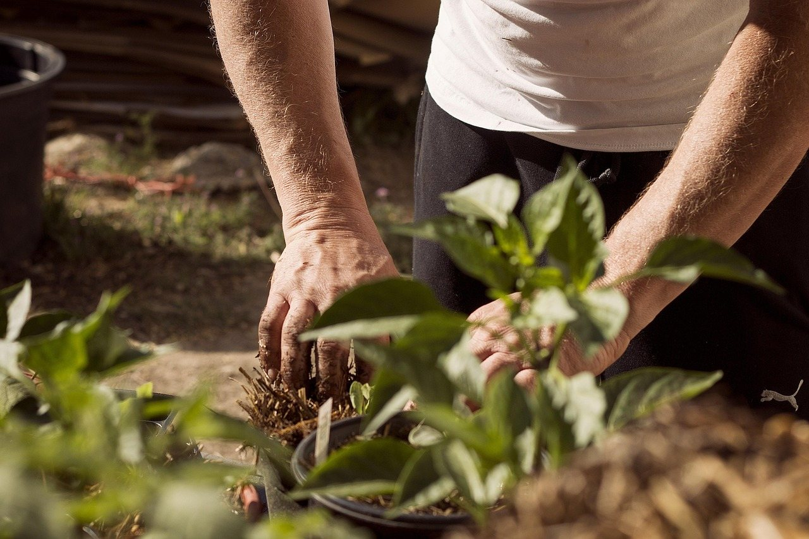

Turf
Lawn mowing
We cut the lawn the way you'd cut it if you had the Saturday. Even height, clean lines.
Best: Jun–Aug
Brunswick, ME · Landscape work
Mowing, trimming, planting, mulching and cleanup, laid out by season so your yard gets looked after from the first thaw to the last leaves.
Landscape work for Brunswick, ME yards
The yard calendar
Tap a season to see the work that belongs to it.
The snow's gone and the yard shows what winter did. Flattened beds, twigs everywhere, grass that's a little worn. Spring is for clearing that, getting new plants into cool, damp soil and laying mulch so the beds start the year tidy.
Once everything's growing, the job is small and constant. Grass wants cutting, hedges get ahead of themselves and bed lines blur. A little attention often does more than one big push in August.
Leaves pile up and the cooler air is easy on new roots. What gets done in fall decides how the yard looks when it wakes up in spring.

How we work
Your yard already has a shape: where the sun sits, how the ground slopes, what grows well. We work with the land around your home so the finished look feels natural.
A fresh start or regular attention, the approach is the same. More about how we see a yard
The work
A few lines about what you've got is a good place to start.
Ask for a yard visit